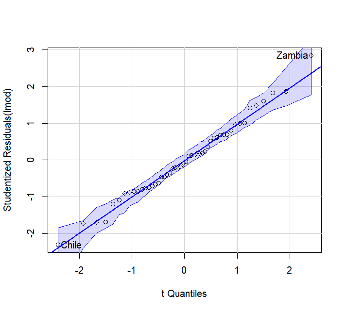

回归分析第6讲——基于R语言诊断线性回归
这一讲为实践内容，我们将学习如何使用R语言对已经建立的线性回归模型进行诊断。值得注意的是，模型诊断的方法很多，可用的函数也很多，所以并不局限于本讲所提供的方法。
本讲默认读者已经了解R语言的基本语法，能够在自己的电脑中成功编写和运行R脚本。
一、残差诊断
诊断模型，先看残差。对于残差诊断，我们往往从三个方面去考察：
- 等方差，即残差方差是否为常数；
- 正态性，即残差是否服从正态分布；
- 独立性，即各个残差之间是否独立。
1.1 等方差检验
要检验方差是否为常数，最直观的办法就是绘制残差图。绘制残差图时，要以残差值为纵坐标，但横坐标有很多选择，一般我们选择拟合值。对于残差图来说，一般会出现下面三种形式：
- 最左边是正常情况，也就是残差上下左右均匀地分布在直线附近，没有任何多余地趋势。
- 中间是异方差，也就是残差分布左右不均匀，往往成放射状或收缩状。
- 最右边是非线性方差，也就是残差分布上下不均匀，可能需要对响应变量进行幂次变换。
我们来看一个具体的例子。我们使用faraway包中的savings数据集，它记录了1960~1970年各个国家的储蓄数据，我们用来构建线性回归：
#install.packages("faraway") |
我们直接绘制残差图，其中fitted()表示求拟合值，residuals()表示求残差：
> plot(fitted(lmod), residuals(lmod), xlab="Fitted", ylab="Residuals") |
从图中我们可以看到，这个模型的残差图还是很不错的，可以认为是满足等方差的。
当然，从直观角度来看，我们很难说一张残差图是不是真的好。为了更加准确，这里还有一种假设检验的方法，简称为得分检验(Non-Constant Variance Score Test)。得分检验的基本原理是，以残差为响应变量，以拟合值为自变量的线性回归模型，进而检验残差和自变量的相关性。
也就是说，直接用线性回归来拟合残差图。例如，在上面那个例子中，相当于构建了
lm(residuals(lmod)~fitted(lmod)) |
之后检验回归系数是否显著。如果不显著，则说明原始模型是具有等方差性的。
还有一种更简便的办法就是直接使用car包中的ncvTest()函数来完成：
#install.packages("car") |
可以看到，p值不显著，说明我们有理由认为残差方差为常数。
1.2 正态性检验
如果残差服从正态分布，我们的模型就会变得简单一些，因此我们有必要检验一下残差的正态性。正态性的检验方法有很多，这里我们提供两种方法：
- Q-Q图
- Shapiro-Wilk检验
QQ图。QQ图又称为分位数-分位数图（Quantile-Quantile plot），它通过比较两组数据的分位数来确定二者是否服从同一分布，或者将观测数据与正态分布比较，检验其是否服从正态分布。既然我们要检验残差的正态性，就要看残差的分位数和正态分布的分位数是否一致。
我们仍然以这个拟合模型为例：
> lmod <- lm(sr ~ pop15+pop75+dpi+ddpi,savings) |
想要绘制QQ图，我们可以直接调用内置的qqnorm()函数，另外再使用qqline()函数连接第一个四分位数和第三个四分位数所在的直线：
> qqnorm(residuals(lmod),ylab="Residuals",main="") |
如果残差服从正态分布，那么图中的点应当尽可能贴近图中直线。可以看到，图中的点还是比较贴近直线的。
另外，我们还可以使用car包中的qqPlot()函数，它可以更加智能地返回95%置信带，辅助我们判断：
> require(car) |

可以看到，与一般的QQ图不同的是，这里使用的是学生化内残差，除了返回95%置信带，还给出了两个可能存在异常的观测值，还是十分好用的。
Shapiro-Wilk检验。除了通过图形的方式，还可以直接通过假设检验来完成。这里只提供一种作为代表，即Shapiro-Wilk检验，在R语言中直接通过shapiro.test()函数来完成：
> shapiro.test(residuals(lmod)) |
由于p值不显著，所以不能拒绝原假设，应当认为残差服从正态分布。
1.3 独立性检验
在残差诊断的最后，我们来介绍独立性检验。独立性检验往往在时序数据中更常用，因为残差的独立性会影响时序数据建模效果。如果你不涉及时序分析，那么本小节的内容你可以选择跳过。
我们直接用例子来讲解，这里我们使用faraway包中的一组时序数据globwarm，其中nhtemp列表示气温，剩余项是可能与温度有关的变量，我们仅仅关注模型本身而不具体阐释含义：
> data(globwarm, package = "faraway") |
你可能会注意到数据集有很多NA值。事实上，1856年之前的温度数据是缺失的。由于我们只看残差，所以我们选取1856年以后的数据：
> plot(residuals(lmod) ~ year, na.omit(globwarm), ylab = "Residuals") |
可以看到残差图上下分布不均，且存在一定的周期变化，暗示残差独立性可能不满足。
为了更严谨，我们介绍Durbin-Waston检验(DW检验)。DW检验的基本原理和卡方独立性检验如出一辙，在原假设成立的情况下，构造：
要实现DW检验，有很多种方式，比如lmtest包中的dwtest()：
# install.packages("lmtest") |
可以看到，p值显著，说明残差不独立。
再比如car包中的durbinWatsonTest()：
> require(car) |
p值仍然非常显著，并且还给出了一阶自相关系数的值。
二、强影响点诊断
考察完残差后，接下来我们考察强影响点。诊断方法主要包括：
- 高杠杆点诊断
- 异常值诊断
- 库克距离诊断
2.1 高杠杆点诊断
根据理论所学，诊断高杠杆点通过的值，也就是帽子值(hat value)。帽子值在R语言中的计算很方便，因为R内置了hatvalues()函数。我们仍然以之前用过的savings数据集来示例：
> data(savings, package = "faraway") |
可以看到，所有帽子值的总和就等于参数个数。
当然，这样看不太直观，我们构建一个函数，把这个帽子值画出来：
hat.plot <- function(fit) { |
> win.graph() |
值得注意的是，函数内部有一个identify()函数，这是一个交互函数，在生成的图像中点击数据点，它会生成其对应的数据名称。这样做的目的是帮助我们标记高杠杆点。
win.graph()这个函数并不是必须的，而是在Windows系统下运行时才会使用，这是因为如果在Windows系统下直接调用identify()函数，可能无法实现交互功能。
由于在图中点击了四个高杠杆点，函数还为我们返回了高杠杆点数据的位置（21、23、44、49）。
2.2 异常值诊断
在理论知识中，我们已经知道对于较大的点可能就是异常值。因此，我们构造了学生化外残差来检验某个点是不是异常的。当然，如果要检验异常值，还有一个更简单的方法——画图。
我们以faraway包中的star数据集为例，这里记录了CYG OB1星群的47颗星星的数据，我们想要探讨星星表面温度和光线强度的关系，因此构建线性回归模型：
> data(star, package = "faraway") |
很明显，左上角的四个点显著影响了整个数据集的拟合，甚至已经翻转了斜率正负。
2.3 库克距离诊断
在R语言中计算库克距离可以通过cooks.distance()来得到，我们仍以前面的savings数据集为例：
> data(savings, package = "faraway") |
一般地，如果库克距离大于，那么可以认为是强影响点（其中是不包含截距项的参数个数），所以我们可以根据这个原理来绘制库克距离的柱状图：
cutoff <- 4/(nrow(savings)-length(lmod$coefficients)-2) |
其中which=4是指画出库克距离图。
plot(lmod)可以直接绘制各类诊断图，包括残差图、QQ图、库克距离图等，可以自行探索。
2.4 强影响点综合图
最后我们介绍car包中一个非常综合的函数influencePlot()，它可以同时绘制包括异常值、高杠杆点、库克距离的综合信息，可以自己尝试一下：
> require(car) |
圆圈的大小和颜色代表了库克距离，横轴代表了帽子统计量，纵轴代表了学生化残差，并且函数还返回了强影响点的具体数值。
三、线性结构诊断
前面我们已经诊断了残差和强影响点，接下来我们还可以考虑对模型的线性结构进行诊断。诊断线性结构是指对模型的线性关系进行诊断，也就是说判断其是否适合使用线性回归来拟合数据。
3.1 偏回归图/新增变量图
偏回归图(Partial Regression Plot)/新增变量图(Add Variable Plot)就是检验响应变量和某个自变量之间是否具有线性关系，以此判断是否适合使用线性回归。偏回归图的构造方法如下：我们先将响应变量与除了之外的所有自变量进行回归，并计算残差值，作为y，即：
再将与除了自己之外的所有自变量进行回归，并计算残差值，作为x，即：
最后画出散点图，也就是构建：
如果满足线性结构，那么的偏回归图的回归直线斜率和全回归时的回归系数一致。
car包中有一个方便的avPlots()函数，可以一次性给出每一个自变量的偏回归图，还能标注一些强影响点：
> data(savings, package = "faraway") |
在绘制偏回归图之前，记得先剔除诊断出的强影响点，否则也会影响对线性结构的判断。
3.2 偏残差图/成分残差图
偏残差图(Partial Residuals Plot)/成分残差图(Component Residuals Plot)跟偏回归图有些区别，偏残差图是以的值为x轴，以为纵轴，此时偏残差图的回归直线斜率仍然为的回归系数，如果不是直线，那么说明模型的线性结构有待考量。
这里我们还是以savings为例，你可以使用R内置的termplot()来绘制偏残差图，也可以使用car包中的cvPlots()函数：
> require(car) |
相对于偏回归图来说，偏残差图似乎更敏感些，我们也能发现数据中的一些异常的地方。
3.3 共线性诊断
最后我们介绍共线性的诊断。在理论知识中我们提到，共线性是由于自变量之间本身存在线性关系，从而导致回归系数的估计不准确。最直接的体现就是是奇异矩阵，或者说其特征值包含0或很接近0的数。共线性的出现会使得线性结构受损，所以必须要处理。
在R中共线性的诊断可以使用vif()函数。这里我们以faraway中的seatpos数据集为例，该数据集描述了汽车司机的座椅位置和腿长臂长等因素的关系。我们建立线性回归模型后，直接调用faraway包中的vif()函数进行分析：
> data(seatpos, package = "faraway") |
可以看到，HtShoes、Ht、Seated等存在很强的共线性，在构建模型时需重新考量。